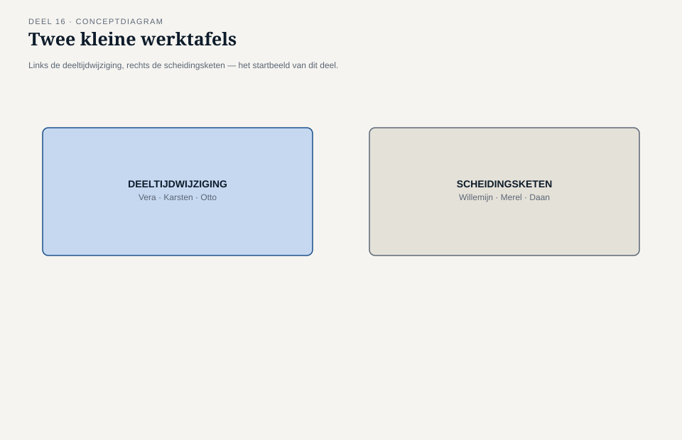
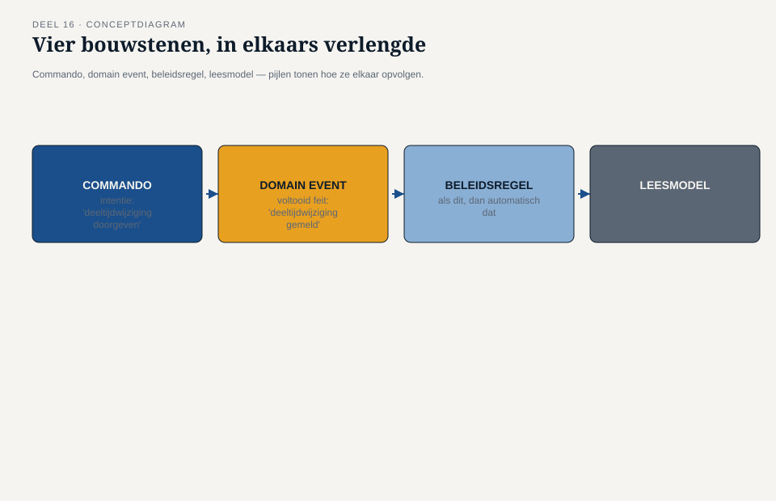
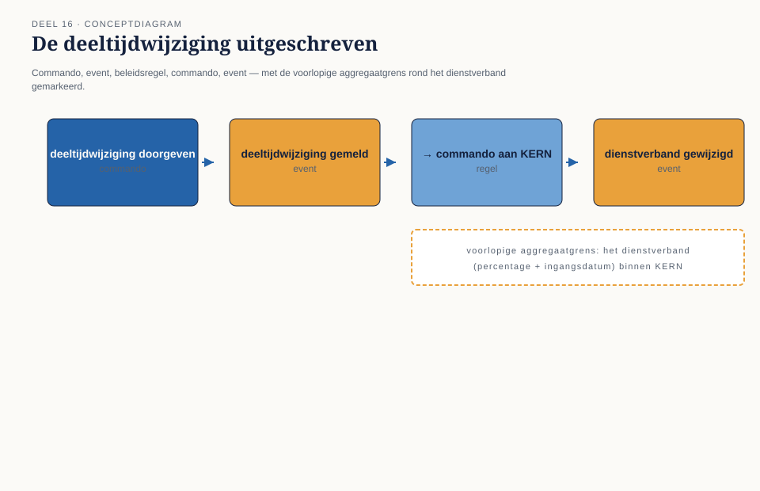
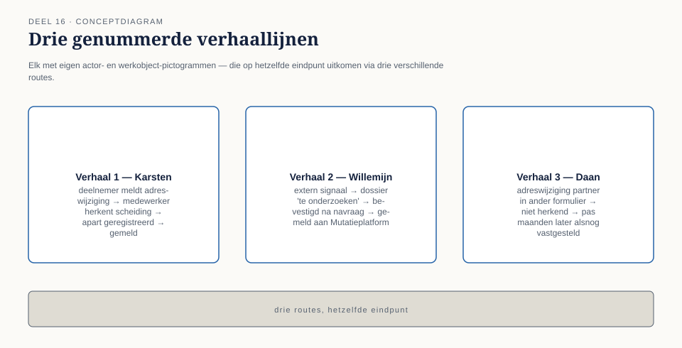
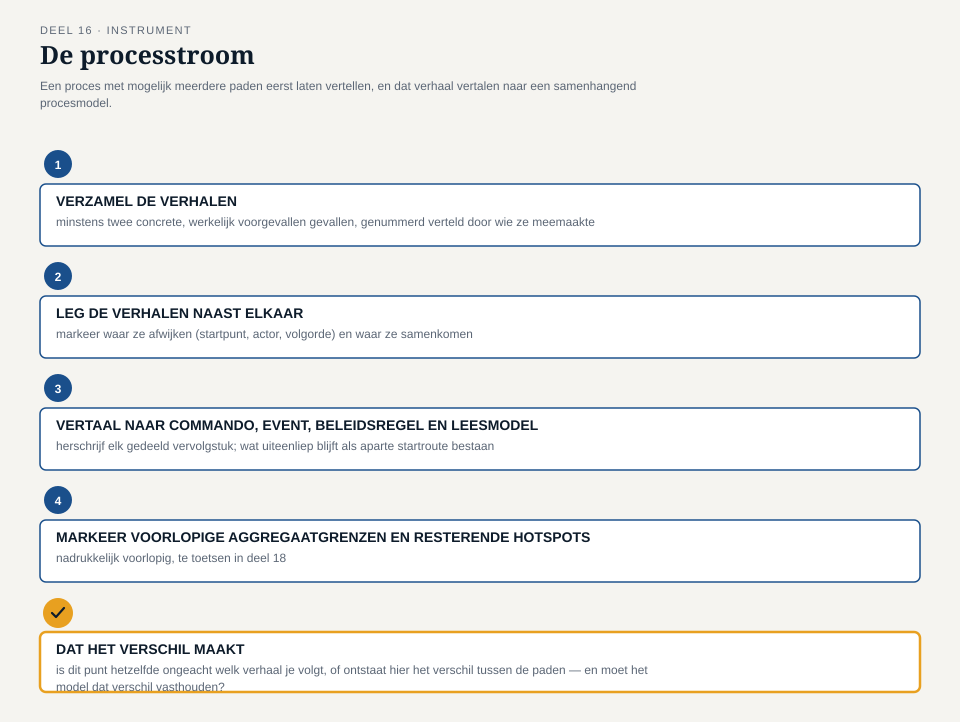

Deel 16 — EventStorming II: procesmodellering en ontwerpniveau; domain storytelling
Reader · Ductus-cursus Domain-Driven Design · niveau 2 (professional) · deel 16 van 30
16.1 Waar dit deel over gaat
Deel 15 sloot af met een muur vol tijdlijn, vier pivotal events en zes hotspots — en met Foppe’s aankondiging dat twee daarvan bewust zijn doorgeschoven: de deeltijdwijziging (één gebeurtenis of twee, en verschilt dat per systeem) en de scheidingsketen (een volgorde die wisselt afhankelijk van wie een scheiding het eerst meldt). Big-picture EventStorming was, zoals Foppe het noemde, “breed vóór diep.” Dit deel is het moment waarop het team dieper gaat — op precies deze twee plekken.
Dat dieper gaan vraagt ander gereedschap dan de wand van deel 15. Big picture legt een landschap in grove lijnen vast; wat het team nu nodig heeft, is precisie op het niveau van één proces: welke commando’s leiden tot welke gebeurtenissen, welke regels bepalen wat er daarna gebeurt, en — waar één proces meerdere, elk legitieme paden kent, zoals bij de scheidingsketen — een manier om die paden naast elkaar te vertellen zonder ze voortijdig tot één waarheid te persen. Dit deel introduceert daarvoor twee instrumenten: EventStorming op proces- en ontwerpniveau, de twee resterende niveaus naast big picture, en domain storytelling, een aanvullende werkvorm die is toegesneden op precies het soort meerpadige, door mensen verteld proces dat de scheidingsketen is.
Aan het eind van dit deel kun je:
- het verschil benoemen tussen big-picture-, procesmodellerings- en ontwerpniveau in EventStorming, en per situatie kiezen welk niveau nodig is;
- een proces in commando’s, gebeurtenissen, beleidsregels (policies) en leesmodellen (read models) uitschrijven, en daarbij business rules expliciet maken die eerder impliciet bleven;
- domain storytelling toepassen om een proces met meerdere, van elkaar afwijkende paden te vertellen vanuit het perspectief van wie het proces daadwerkelijk uitvoert;
- met de processtroom een gemengde sessie structureren die vertelde varianten (domain storytelling) omzet in één samenhangend procesmodel (EventStorming), inclusief voorlopige aggregaatgrenzen die in deel 18 verder worden getoetst.
16.2 De casus: twee hotspots, opnieuw op tafel
Uit het casusdossier: het contextmap-team komt een week na deel 15 terug, dit keer in een kleinere samenstelling — niet alle vijf systemen tegelijk, maar de mensen die de twee doorgeschoven hotspots het beste kennen.
Foppe opent zonder de wand van vorige week opnieuw op te hangen. “Vorige week hebben jullie ontdekt wát er nog niet vaststaat. Vandaag gaan we niet nog een keer breed kijken — we gaan twee dingen, één voor één, tot op de bodem uitzoeken.” Hij verdeelt de sessie meteen: het eerste deel van de ochtend is voor de deeltijdwijziging, met Vera en Karsten aan tafel omdat zij de tegenstelling in deel 15 hebben veroorzaakt. Otto sluit aan namens het Mutatieplatform, dat straks moet verwerken wat hier wordt afgesproken.
Vera herhaalt haar positie zonder omhaal: “Bij KERN is een deeltijdwijziging één gebeurtenis, met één ingangsdatum. Het dienstverband loopt door, alleen het percentage verandert.” Karsten herhaalt de zijne: “Bij het Werkgeversportaal melden werkgevers dit vaak als twee dingen — eerst een beëindiging van het oude contract, dan een nieuw contract met het nieuwe percentage. Niet omdat wij dat zo willen, maar omdat dat is hoe werkgevers het zelf ervaren en aanleveren.” Otto, ongeduldig zoals gewoonlijk: “Kunnen we niet gewoon met zijn allen kiezen wie er gelijk heeft?” Foppe: “Dat is precies de vraag die deze sessie niet gaat beantwoorden — omdat hij verkeerd gesteld is. Niemand heeft ongelijk. Jullie beschrijven twee verschillende delen van hetzelfde landschap. De vraag is niet wie gelijk heeft, maar wat er, stap voor stap, moet gebeuren om deze twee werkelijkheden bij elkaar te brengen zonder dat er onderweg iets verloren gaat.”
Het tweede deel van de middag is voor de scheidingsketen, met Willemijn erbij namens het Nabestaandenloket — een scheiding raakt uiteindelijk ook de vaststelling van partnerpensioen, mocht de deelnemer later overlijden. Merel Duijvestein sluit aan vanuit haar rol als business analist; zij heeft, in de week tussen deel 15 en dit deel, drie voorbeelden van daadwerkelijke scheidingsmeldingen uit de bestaande dossiers opgehaald. “Ik heb geen proces gevonden,” zegt ze. “Ik heb drie verhalen gevonden, en ze lopen alle drie anders.”

16.3 Procesmodellerings- en ontwerpniveau: van gebeurtenissen naar oorzaak en regel
Big-picture EventStorming (deel 15) werkt met één bouwsteen: het domain event, in de verleden tijd, als feit waarover iedereen het eens kan zijn. Dat volstaat voor overzicht, maar niet voor precisie — een tijdlijn van feiten vertelt niet wát die feiten veroorzaakt, en niet volgens welke regel het ene feit al dan niet tot het volgende leidt. Procesmodellerings-EventStorming voegt daarvoor drie bouwstenen toe aan het domain event:
Het commando. Een commando is een intentie: iemand of iets wil dat er iets gebeurt — “deeltijdwijziging doorgeven” — vóórdat vaststaat of het ook daadwerkelijk gebeurt. Waar een domain event een voltooid feit is, is een commando een verzoek dat kan slagen (en dan een event oplevert) of kan mislukken (en dan niet). Het onderscheid dwingt het team iets te benoemen dat op de big-picture-wand van deel 15 nog impliciet bleef: wie of wat initieert een stap, en is dat initiatief altijd succesvol.
De beleidsregel (policy). Een beleidsregel legt vast: als dit gebeurt, dan volgt automatisch dat — zonder tussenkomst van een nieuw, extern commando. “Zodra ‘dienstverband gewijzigd’ is vastgesteld, wordt automatisch de opbouw van pensioenaanspraken herberekend” is een beleidsregel: geen mens hoeft dat apart te initiëren, het volgt uit het eerdere feit. Beleidsregels zijn de plek waar de meeste verborgen bedrijfslogica van een landschap zich ophoudt, en waar ze in procesmodellering voor het eerst zichtbaar en bespreekbaar worden in plaats van verstopt in code.
Het leesmodel (read model). Informatie die iemand nodig heeft om een volgend commando weloverwogen te kunnen geven — bijvoorbeeld: voordat een medewerker een deeltijdwijziging bevestigt, moet die medewerker het huidige percentage en de ingangsdatum van het lopende dienstverband kunnen zien. Een leesmodel is geen registratie van een feit, maar een venster erop, samengesteld voor precies dat ene moment van besluitvorming.
Deze drie bouwstenen, samen met het domain event uit deel 15, geven het team een taal om een proces stap voor stap te reconstrueren: commando, event, beleidsregel die het volgende commando triggert, leesmodel dat een commando informeert, opnieuw een commando, enzovoort.
Ontwerpniveau gaat nog een stap verder en is het niveau waar EventStorming het dichtst bij het uiteindelijke model komt, zonder er al code van te maken. Op dit niveau markeert het team, rond een cluster van commando’s en events die logisch bij elkaar horen, een voorlopige aggregaatgrens — een eerste, nog niet getoetste gok over waar één consistentiegrens in het uiteindelijke model zou moeten lopen. Niveau 1 van deze cursus behandelde het aggregate al als begrip (deel 6); ontwerpniveau-EventStorming is het moment waarop een team dat begrip voor het eerst tegen een écht, meerdere-systemen-breed proces aanhoudt, in plaats van tegen een geïsoleerd voorbeeld. Dit deel markeert die grenzen als voorlopig — de daadwerkelijke toetsing van aggregaatgrenzen bij meerdere teams volgt in deel 18.

16.4 De deeltijdwijziging: het proces uitgeschreven
Het team werkt de deeltijdwijziging uit met de vier bouwstenen uit §16.3, en de knoop van deel 15 blijkt op te lossen zodra de vraag anders wordt gesteld. In plaats van “is dit één gebeurtenis of twee” vraagt Foppe: “Wat is het eerste commando, wie geeft het, en wat gebeurt daarna — precies, stap voor stap?”
Karsten begint: het commando “deeltijdwijziging doorgeven”, gegeven door een werkgever via het Werkgeversportaal. Dat commando levert, aan de kant van het Werkgeversportaal, het event “deeltijdwijziging gemeld” op — en dat is, zo stelt het team vast, altijd één gebeurtenis, ook wanneer een werkgever die intern als twee handelingen ervaart. De twee-stappen-ervaring van de werkgever is een kwestie van hoe het portaal het gesprek met de werkgever voert, niet van wat het landschap als feit registreert.
Een beleidsregel — “zodra ‘deeltijdwijziging gemeld’ binnenkomt, geeft het Mutatieplatform automatisch het commando ‘dienstverband bijwerken’ aan KERN” — brengt het event bij Vera’s systeem. En hier wordt zichtbaar wat de botsing van deel 15 werkelijk was: niet een feitelijk verschil in wat er gebeurt, maar een verschil in hoe KERN het commando “dienstverband bijwerken” intern verwerkt. Vera: “Als wij dat commando ontvangen, resulteert dat bij ons in één event: ‘dienstverband gewijzigd’, met een nieuw percentage en dezelfde, doorlopende ingangsdatum van het oorspronkelijke dienstverband.” Geen nieuw dienstverband. Geen beëindiging. Eén wijziging.
Het team legt de conclusie vast als een aparte regel, niet als een compromis: de vraag “is dit één gebeurtenis of twee” had geen landschapsbreed antwoord nodig — ze had een scherp afgebakend commando en één, eenduidig vastgesteld resultaat-event per ontvangende context nodig. Het Werkgeversportaal mag intern met twee handelingen werken, zolang het naar buiten toe één commando met één betekenis aflevert. KERN registreert dat als één, doorlopend event. De hotspot verdwijnt niet omdat één kant gelijk kreeg, maar omdat het proces preciezer werd uitgeschreven dan de tijdlijn van deel 15 toeliet.
Twee beleidsregels sluiten het proces af: “zodra ‘dienstverband gewijzigd’ is vastgesteld, wordt de pensioenopbouw automatisch herberekend”, en — een regel die pas nu, bij het uitschrijven, aan het licht komt — “als de deeltijdwijziging een percentage onder een vastgestelde ondergrens oplevert, moet een medewerker de wijziging handmatig bevestigen voordat de herberekening plaatsvindt.” Niemand in de kamer wist zeker of die ondergrensregel al bestond of alleen in Vera’s hoofd zat; het team markeert hem als een nieuwe hotspot — niet opgelost vandaag, maar voor het eerst zichtbaar gemaakt, en meegenomen als kandidaat-onderwerp voor deel 17.
Rond dit cluster van commando’s en events tekent het team, op ontwerpniveau, een voorlopige aggregaatgrens: het dienstverband, met zijn percentage en ingangsdatum, als één samenhangend geheel binnen KERN. Vera merkt daarbij meteen op dat deze grens raakt aan een vraag die groter is dan dit ene proces — wie, bij meerdere teams die tegelijk aan aangrenzende delen van het landschap bouwen, deze grens mag wijzigen. Foppe noteert die vraag expliciet als “voor deel 18”, zonder hem hier verder te openen.

16.5 Domain storytelling: een proces vertellen, niet alleen opschrijven
Waar procesmodellerings-EventStorming uitstekend werkt voor de deeltijdwijziging — één helder begin, één helder eind, een beperkt aantal varianten — loopt het team vast zodra het dezelfde aanpak op de scheidingsketen probeert. Merels drie voorbeelden lopen, zoals ze zelf al aankondigde, alle drie anders: in het ene geval meldt de deelnemer de scheiding zelf bij het Werkgeversportaal (via een wijziging in de burgerlijke staat die indirect wordt doorgegeven), in het tweede geval ontvangt KERN eerst een signaal via een externe bron, en in het derde geval meldt de werkgever iets dat pas achteraf blijkt samen te hangen met een scheiding. Drie verschillende startpunten, drie verschillende volgordes van dezelfde uiteindelijke gebeurtenissen.
Foppe introduceert hier een tweede instrument: domain storytelling, ontwikkeld door Stefan Hofer en Henning Schwentner. Waar EventStorming een proces reconstrueert door het te ontleden in losse bouwstenen (commando, event, regel), vertrekt domain storytelling vanuit het tegenovergestelde: laat een domeinexpert een concreet, werkelijk voorgevallen geval navertellen, in de eigen woorden, en leg dat verhaal vast in de volgorde waarin het verteld wordt — als een reeks genummerde zinnen, elk met een vaste vorm: wie (een actor) doet wat (een activiteit) met welk werkobject, eventueel gericht aan wie. Elke zin krijgt een volgnummer, zodat een verhaal van begin tot eind leesbaar blijft als een keten van genummerde stappen, en de zinnen worden begeleid door een eenvoudige, zelfgekozen pictografische voorstelling — een simpel symbool voor de actor, een ander voor het werkobject dat van hand tot hand gaat — zodat een verhaal in één oogopslag te volgen is, ook door wie niet bij het gesprek was.
Het verschil met EventStorming is functioneel, niet decoratief. EventStorming dwingt tot abstractie: een commando, een event, een regel, los van wie het precies uitvoert. Domain storytelling laat juist de persoon en de concrete situatie intact — “de deelnemer belt zelf naar de HR-afdeling” is een andere zin dan “commando: scheiding melden”, en dat verschil is precies waarom domain storytelling hier werkt waar procesmodellering vastliep: bij de scheidingsketen zit de essentie van het probleem niet in wát er gebeurt, maar in wíe het als eerste weet en hoe dat bij de volgende partij terechtkomt.
Merel vertelt haar eerste voorbeeld als een reeks genummerde zinnen: (1) de deelnemer meldt een adreswijziging bij het Werkgeversportaal, vanwege een verhuizing na de scheiding; (2) een medewerker van het Werkgeversportaal, alert op het patroon, vraagt door en ontdekt de scheiding; (3) de medewerker registreert de scheiding als aparte mutatie, los van de adreswijziging; (4) het Werkgeversportaal meldt de scheiding aan het Mutatieplatform. Willemijn vertelt het tweede voorbeeld: (1) een externe bron levert een signaal over een wijziging in de burgerlijke staat aan KERN; (2) KERN markeert het dossier als “te onderzoeken”; (3) een medewerker van Nabestaandenzaken bevestigt de scheiding na navraag bij de deelnemer; (4) KERN meldt de scheiding aan het Mutatieplatform. Daan zelf reconstrueert het derde: (1) de werkgever meldt een adreswijziging van de partner als nevenpersoon in een ander mutatieformulier; (2) niemand herkent dit destijds als een scheidingssignaal; (3) pas maanden later, bij een waardeoverdrachtaanvraag, wordt de scheiding alsnog vastgesteld.
Drie verhalen, drie verschillende actoren die het eerst weten, drie verschillende paden naar hetzelfde eindpunt — en, in het derde geval, een pad dat maandenlang niet als scheidingsketen wordt herkend. Dat laatste detail was in de tijdlijn van deel 15, met zijn geabstraheerde events, onzichtbaar gebleven; in de verhalen van Merel, Willemijn en Daan komt het vanzelf naar boven, precies omdat domain storytelling de concrete situatie niet weg-abstraheert.

16.6 Van drie verhalen naar één proces: waar storytelling en EventStorming elkaar ontmoeten
Drie verhalen zijn geen proces. De volgende stap is er een die geen van beide instrumenten alleen aankan: de drie verhalen naast elkaar leggen, de punten markeren waarop ze uiteenlopen én de punten waarop ze weer samenkomen, en dát vervolgens vertalen naar de taal van procesmodellering — commando’s, events en beleidsregels — zodat het resultaat niet alleen navertelbaar is, maar ook bruikbaar voor wat er verderop in het landschap moet gebeuren.
Het team ontdekt, door de drie verhalen te vergelijken, dat ze niet drie losse processen zijn maar één proces met drie mogelijke startpunten die daarna, na een paar stappen, samenkomen in hetzelfde vervolg. Dat inzicht wordt de kern van een nieuwe beleidsregel: “zodra een scheiding is vastgesteld — via welke route dan ook — meldt de vaststellende context het commando ‘scheiding registreren’ aan het Mutatieplatform.” Drie verschillende paden ervoor, één commando erna. Vanaf dat commando is het vervolg, zo blijkt bij het doorlopen, in alle drie de gevallen identiek: het Mutatieplatform geeft het event “scheiding geregistreerd” door aan KERN, een beleidsregel triggert de herberekening van pensioenaanspraken, en — relevant voor het Nabestaandenloket — een tweede beleidsregel zorgt dat een eventuele lopende vaststelling van partnerpensioen op de hoogte wordt gebracht van de gewijzigde partnerstatus.
Wat overblijft als onopgeloste hotspot, expliciet benoemd en niet weggewerkt, is het derde verhaal: een scheiding die pas maanden later wordt herkend. Dat is geen procesvraag maar een detectievraag — welk signaal had, eerder dan een waardeoverdrachtaanvraag, al kunnen wijzen op een scheiding? Het team besluit dit niet vandaag op te lossen, maar wel scherp te formuleren als een concrete vraag voor het vervolg: wat zijn de vroege signalen van een scheiding die het landschap nu nog niet herkent als zodanig? — een vraag die, zoals Foppe aan het eind van de sessie opmerkt, zich uitstekend leent voor het instrument van deel 17: een concreet voorbeeld dat een regel scherp maakt, in plaats van een regel die achteraf blijkt niet te dekken wat hij zou moeten dekken.

16.7 De werkvorm: de processtroom
Het instrument van dit deel is de processtroom: een sjabloon om een proces met mogelijk meerdere paden eerst te laten vertellen — in de taal van wie het uitvoert — en dat verhaal vervolgens te vertalen naar een samenhangend procesmodel, zonder de verschillen tussen paden voortijdig glad te strijken.
De vier stappen
Stap 1 — Verzamel de verhalen. Laat, voor het proces dat wordt uitgediept, minstens twee concrete, werkelijk voorgevallen gevallen navertellen door wie ze heeft meegemaakt, in genummerde, pictografische zinnen (actor, activiteit, werkobject). Verzin geen gemiddeld of ideaalproces — vraag naar wat daadwerkelijk is gebeurd, inclusief de omwegen.
Stap 2 — Leg de verhalen naast elkaar. Markeer waar de verhalen van elkaar afwijken (verschillende startpunten, verschillende actoren, een andere volgorde) en waar ze samenkomen. Een punt waarop meerdere verhalen identiek verder verlopen, is een kandidaat voor een gedeeld vervolgproces; een punt waarop ze blijvend uiteenlopen, blijft in het model als aparte route bestaan.
Stap 3 — Vertaal naar commando, event, beleidsregel en leesmodel. Herschrijf elk gedeeld vervolgstuk in de taal van procesmodellerings-EventStorming: welk commando initieert de stap, welk event volgt, welke beleidsregel triggert het volgende commando automatisch, welk leesmodel is nodig voor wie een commando geeft. Wat bij stap 2 uiteenliep, blijft ook hier als aparte startroutes bestaan die op hetzelfde commando uitkomen.
Stap 4 — Markeer voorlopige aggregaatgrenzen en resterende hotspots. Trek, rond een cluster van samenhangende commando’s en events, een voorlopige aggregaatgrens — nadrukkelijk gemarkeerd als voorlopig, te toetsen in deel 18. Benoem apart wat er tijdens het vertalen aan nieuwe hotspots naar boven komt: regels die niemand met zekerheid kon bevestigen, vragen die een ander instrument nodig hebben dan dit.
Het veld dat het verschil maakt
Onder de vier stappen staat een vijfde, afsluitend veld, toe te passen op elk punt waar de verhalen van stap 2 samenkomen of juist uiteenlopen:
Dat het verschil maakt: is dit punt in de stroom hetzelfde ongeacht welk verhaal je volgt, of ontstaat hier het verschil tussen de paden — en als het verschil ontstaat, is dat een verschil dat het model moet vasthouden, of een verschil dat alleen in hoe het verteld wordt zit?
Dit veld voorkomt de fout die de deeltijdwijziging bijna maakte in deel 15: een verschil in vertelling (het Werkgeversportaal ervaart twee stappen) verwarren met een verschil in het model (KERN registreert het als één). Foppe past het veld toe op het scheidingsvraagstuk: de drie startpunten zijn een verschil dat het model moet vasthouden (drie routes naar hetzelfde commando), terwijl de vraag “is dit één gebeurtenis of twee” bij de deeltijdwijziging uiteindelijk een verschil bleek te zijn dat alleen in de vertelling zat, niet in het model zelf.

16.8 Terug naar de casus, en vooruit
Aan het eind van dit deel heeft het contextmap-team twee hotspots uit deel 15 niet zomaar afgevinkt, maar allebei verdiept tot iets bruikbaars: de deeltijdwijziging als één, precies uitgeschreven proces met een voorlopige aggregaatgrens rond het dienstverband bij KERN, en de scheidingsketen als drie verhalen die samenkomen in één gedeeld vervolg, met een expliciet benoemde, nog open detectievraag over het derde, laat herkende geval.
Otto, die de sessie opende met “kunnen we niet gewoon kiezen wie er gelijk heeft”, sluit hem af met een andere constatering: “Er was geen gelijk te kiezen. Er was alleen een vraag die te grof gesteld was.” Iris, die voor het eerst sinds deel 14 niet zelf aanwezig is maar het verslag krijgt voorgelegd, stelt via Daan één vraag terug: of de nieuwe ondergrensregel bij de deeltijdwijziging (§16.4) en de detectievraag bij de scheidingsketen (§16.6) nu al beantwoord kunnen worden. Daans antwoord, doorgegeven via Foppe: “Nog niet — en dat is precies waarom we ze niet hebben laten liggen als vage twijfel, maar als scherp geformuleerde vragen. Volgende week hebben we het instrument om ze met concrete voorbeelden te beantwoorden in plaats van met nog een discussie.”
Vooruit naar deel 17. De processtroom van dit deel levert regels op die intuïtief kloppen, maar nog niet getoetst zijn aan concrete gevallen: de ondergrensregel bij de deeltijdwijziging, en de vraag welke vroege signalen een scheiding al hadden kunnen verraden. Deel 17 introduceert example mapping en specification by example: een werkvorm die precies dit soort regels scherp maakt door ze te toetsen aan concrete voorbeelden — met, zoals in deel 16 al te zien was bij het derde scheidingsverhaal, een goede kans dat een van die voorbeelden een vraag oproept die niemand had zien aankomen.